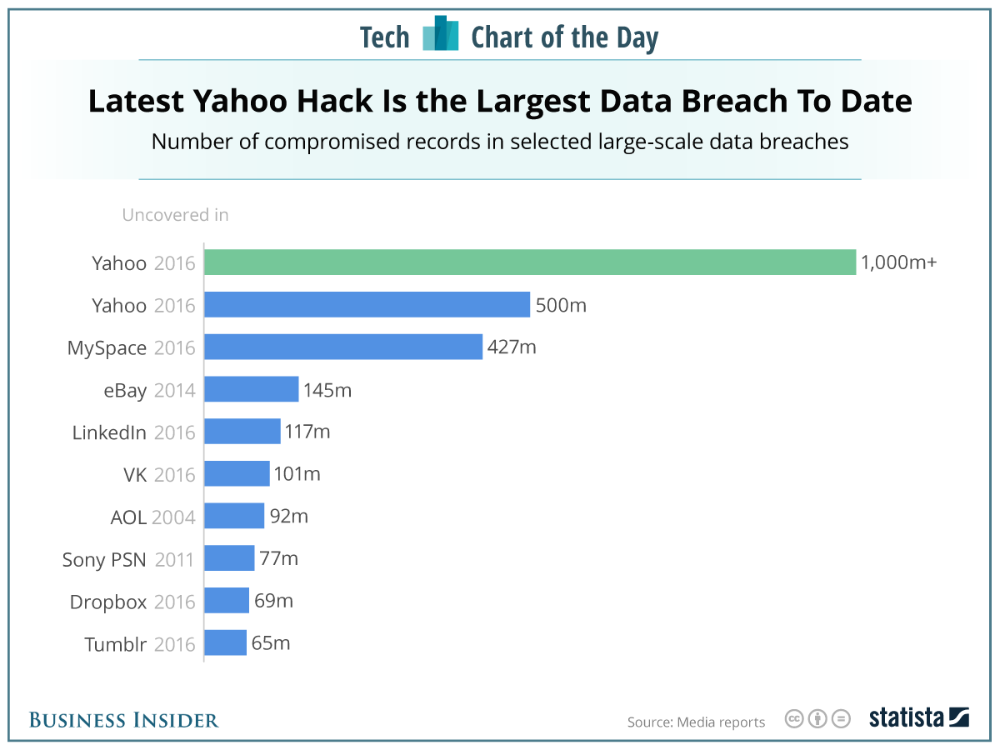
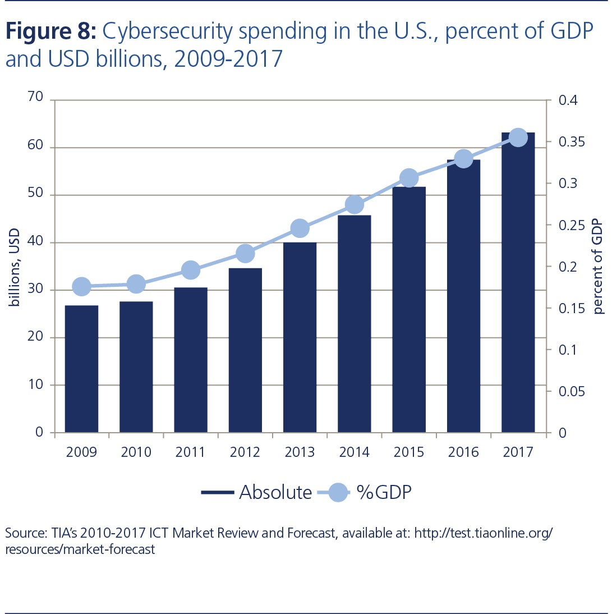
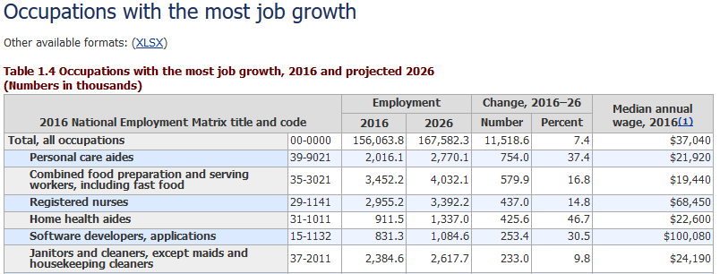
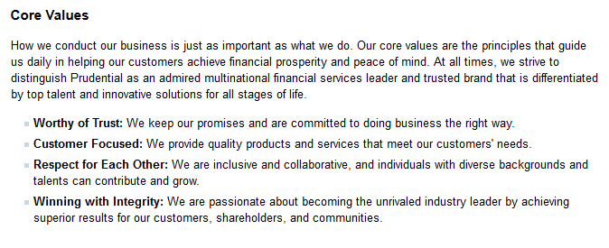
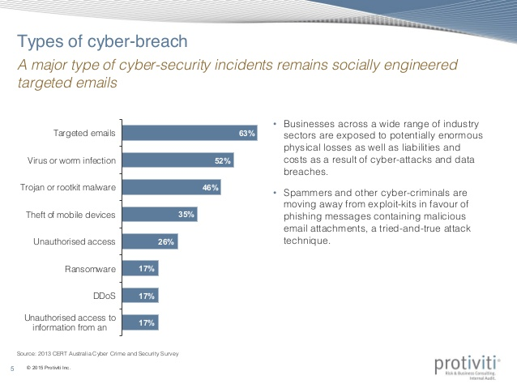
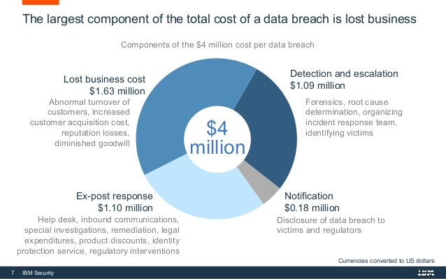
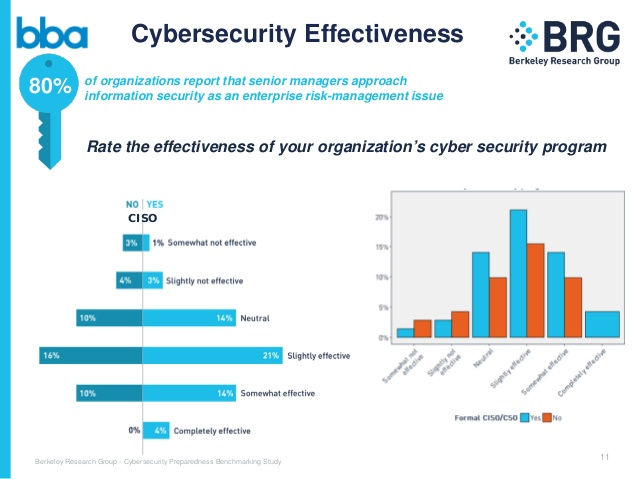

Cyber Security is Critical is a Critical Part of any Business
Hover over rotating icons for more info.

[3]J. Dunn, "Here’s how the latest massive Yahoo hack compares to other famous security breaches", Business Insider, 2017. [Online]. Available: http://www.businessinsider.com/biggest-hacks-of-all-time-chart-2016-12. [Accessed: 12- Dec- 2017]."
[4]"Lock Icon - free download, PNG and vector", Icons8.com, 2017. [Online]. Available: https://icons8.com/icon/94/lock. [Accessed: 12- Dec- 2017].
User information can be exposed leading to a loss of trust in the company
hover over subtext for more info
Users may take their business elseware if they do not feel secure. Breaches cause a lot of bad PR
Critical infrastructure can be disabled costing the company money in lost business and time.
hover over subtext for more info
Companies can loose money when their services go down. Each minute the company cannot work it is loosing money. Many companies will even see a drop in stock prices after a DDOS attack.[5]
Lawsuits, such as the $25 million AT& T settlement, can cost the company a lot of money.
hover over subtext for more info
Lawsuits can be incredibly expensive. In 2015 AT& T had to pay $25 million dollars in fines for exposing over 280,000 customer records due to their poor security.[6]
Main Research Methods
Professor Summer Fowler
hover for more info
Summer Fowler has worked with Carnegie Mellon University for over 9 years. She currently teaches security policy and governance courses. She has also worked at John Hopkins University and Northrop Grumman.[8]
Prudential CIO, Barbara G. Koster
hover for more info
Senior Vice President Barbara G. Koster is the CIO (Chief Information Officer) of Prudential Financial. She oversees all of its technological operations worldwide. This includes security and technology governance.[9]
Prudential CISO, Thomas Doughty
hover for more info
Vice President Thomas Doughty is Prudential Financial's CISO (Chief Information Security Officer) and a West Point Graduate. He oversees the security aspect of prudential's information systems. Before working with Prudential he worked in the army as a "Military Intelligence Officer specializing in Electronic and Information Warfare."[10]
For my project I mainly focused on interviewing security and business professionals.
Both had experience with many companies and could explain how companies acctually make security budgets.
Research Objective:
Can I Create a Step-by-Step Process for Creating a Security Budget?


[12]"Target Icon - free download, PNG and vector", Icons8.com, 2017. [Online]. Available: https://icons8.com/icon/1304/target. [Accessed: 12- Dec- 2017].
[13]"Risk Nexus: Overcome by cyber risks? Economic benefits and costs of alternate cyber futures", Atlantic Council, 2017. [Online]. Available: http://publications.atlanticcouncil.org/cyberrisks//. [Accessed: 12- Dec- 2017].
How do companies who are good at security determine how much to spend on it?
There is an influx of money headed to the cybersecurity sector.[13] To figure how how to use it, companies should look at other companies who have successful security departments.
How do security professionals think the money should be spent?
Cyber security professionals know a lot about how to create a good security system, but will they overspend?
How do business professionals think the money should be spent?
Business professionals are good at creating budgets, but will they skimp on security?
Step 1: Determine Your Critical Assets

[15]"Occupations with the most job growth", Bls.gov, 2017. [Online]. Available: https://www.bls.gov/emp/ep_table_104.htm. [Accessed: 12- Dec- 2017].
[16]"Vault free vector icons designed by Nikita Golubev", Flaticon, 2017. [Online]. Available: https://www.flaticon.com/free-icon/vault_291122. [Accessed: 12- Dec- 2017].
What data needs to be protected? [17][18]
Many companies store tons of user data including names, addresses, credit card numbers, and Social Security numbers. They also store a lot of business data and records.
What infrastructure needs to be protected? [17][18]
Companies are relying more and more on computers. More and more software engineers are being hired[15] which means there are more systems to be attacked. If a service goes down it can cost the business lots of money.
Which assets have the highest chance of being targeted and/or breached [18]
Some assets have more risk than others because of either how valuable the information is or if the asset is harder to defend.
Step 2: Prioritize Business Objectives


[20]"Our Mission, Vision, Core Values", Corporate.prudential.com, 2017. [Online]. Available: http://corporate.prudential.com/view/page/corp/31838. [Accessed: 12- Dec- 2017].
[21]"Three buildings free vector icons designed by Freepik", Flaticon, 2017. [Online]. Available: https://www.flaticon.com/free-icon/three-buildings_62502. [Accessed: 12- Dec- 2017].
How do cyber assets and infrastructure relate to business objectives?[17][18]
What business objectives are affected if the company is breached? What does that mean for the business as a whole?
What infrastructure and assets must be protected at all costs?[17]
What assets will permanently destroy public trust or if leaked?[18] If a system goes down for too long will it put the company out of business?[17]
Prioritize the critical assets that will significantly impact the business objectives.[17]
Make sure the most important assets are protected first so that the company stays focused on the business goals.[17]
Step 3: Determine the Cost of Protecting Business Assets

[23]Barker, "Cyber security for ia and risk 150601", Slideshare.net, 2017. [Online]. Available: https://www.slideshare.net/GrantBarker/cyber-security-for-ia-and-risk-150601. [Accessed: 12- Dec- 2017].
[24]"Coin free vector icons designed by Freepik", Flaticon, 2017. [Online]. Available: https://www.flaticon.com/free-icon/coin_112548. [Accessed: 12- Dec- 2017].
What tools are needed to protect each asset?
There are many different ways attackers use to breach a system.[23] A business needs to analyze what those ways are and set up tools, policies, and procedures to counter them.
What backup defense mechanisms are needed? Make sure there is no one point of failure.[18]
Every security system has its flaws, no matter how good it is. There should be multiple different defenses for assets that compliment and back each other up. Even if multiple security strategies fail there should still be a fallback.[18]
Prioritize the critical assets that will significantly impact the business objectives.[17]
Nowadays, most systems are interconnected, so breach in system could leave a different system vulnerable. That said, if you have a database of medical records and an app that a user accesses it through, focus on defending the database (even if the app is comprimsied) before ensuring that app never goes down.
Step 4: Prepare Backup Plan


[26]"5 Ways to Protect Your Healthcare Organization from a Ransomware Atta…", Slideshare.net, 2017. [Online]. Available: https://www.slideshare.net/ClearDATACloud/5-ways-to-protect-your-healthcare-organization-from-a-ransomware-attack-himss-presentation. [Accessed: 12- Dec- 2017].
[27]"Backup free vector icons designed by Kirill Kazachek", Flaticon, 2017. [Online]. Available: https://www.flaticon.com/free-icon/backup_223384. [Accessed: 12- Dec- 2017].
What happens if infrastructure goes down or data is leaked?
How does the company communicate the issue to the customers? Does the company pay ransomware fees? Does the company have a proper backup for its data? How does the company deal with the PR fallout?[17]
Does the company bring in a 3rd party to clean up after a breach?[18]
There are many companies and organizations that come to help companies deal with a breach. Good communication with the FBI and other government agencies is also important since they can help catch the perpetrator.[18]
Is there a backup system to take over if infrastructure goes down?[17]
How fast can the company get back on its feet? Does the company have alternate servers that go up during an attack? Is there a second site just in case the main workspace is compromised?[17] If a company is not prepared for a problem, they will go out of business.
Step 5: Constantly Monitor the Effectiveness of the System

[28]"Cybersecurity Preparedness Trends and Best Practices", Slideshare.net, 2017. [Online]. Available: https://www.slideshare.net/TonyMoroney1/cybersecurity-preparedness-trends-and-best-practices-68830467. [Accessed: 12- Dec- 2017].
[29]"Video camera free vector icons designed by Chris Veigt", Flaticon, 2017. [Online]. Available: https://www.flaticon.com/free-icon/video-camera_132004. [Accessed: 12- Dec- 2017].
Ineffective systems waste money in the budget.
If some tool or policy does not work, there is no reason to use it. It may even do harm to have it in place because the system has a false sense of security. MAKE SURE TO UPDATE YOUR SOFTWARE!!!
Constantly test tools and policies. If they do not work find new ones and adjust the budget.[18]
Test security tools being used often. Bring in 3rd parties to evaluate the security of the system. Test your employees to make sure they fully understand the security policies in place.[18] If something does not work, find a new option.
Trade information with other companies on how to maximize effectiveness.[18]
It is important to talk to other companies about their security practices, especially ones that could affect you if breached. Have a sense of what others are spending in the security realm in order to get and idea of where you are. Don't copy other companies, but make sure you do not fall behind. [18]
Counterpoints and Rebuttals
Companies should start with a set amount of money for the budget instead of starting with assets.
If you do this, you would either over budget and waste money or under budget and force the security team to make compromises.[18]
Backup plans are expensive and for the weak! Just make your defenses better!
No matter how good your security is, there is always a weakness. You need multiple lines of defense for each item as well as a fallback plan.[17][18]
You shouldn't just monitor general effectiveness, you need an actual ROI
Security's goal is to protect your business interests instead of directly generating benefits. [[18]It is a necessary element that doesn't always directly make the business money. It will however cost a lot for the business if not properly implemented.
Further Research Suggestions
An in-depth analysis of actual company budget data vs budget creation processes.
This would give hard numbers on budget data, but may not measure effectiveness.
Analyzing incidents gives a lot of information about what works and what does not.
This would show warning signs, but the data from the attacks is hard to acces. The hacked company usually tries to cover it up.[18]
Researching popular tools and techniques vs. cost would also give good information on budgets.
This would give a clear monetary idea of how much security costs.